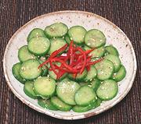

|
Sautéed CucumbersKorea - Oi-Bokkeum | ||||
| Makes: Effort: Sched: DoAhead: |
5 ban ** 50 min Yes |
These quickly sautéed Cucumber slices can be served warm with Steamed Rice and Kimchi as a light lunch for 2, or can be chilled and used as a Banchan or Salad. | |||
|
14 2/3 1 2 1/3 1/8 1 1 ------ ar |
oz t cl t t t t t --- |
Cucumbers (1) Salt Garlic Oil Salt Pepper, black Sesame Oil, dark Sesame Toasted (2) -- Garinish Chili Slivers |
Prep - (40 min - 8 min work)
|